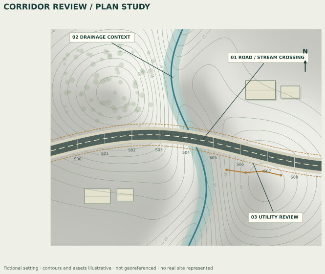

ArcGIS Pro
Professional experience with infrastructure mapping, map production and spatial data QA/QC across civil and utility workflows.
Graduate education / Professional application
My Graduate Certificate in Geographic Information Systems from the University of Texas at Arlington complements my Master of Engineering in Civil Engineering from Texas A&M.
I bring that foundation to infrastructure mapping, field-data workflows, spatial QA/QC and clear project documentation.
View my résumé ↗Discuss a role ↗What I bring to a team
Professional experience with infrastructure mapping, map production and spatial data QA/QC across civil and utility workflows.
Web-map and template workflows that connect field information with route engineering and project documentation.
An active development track: private review-tool prototypes with synthetic public reports. Native QGIS runtime testing remains pending.
Program context
UTA’s current certificate comprises 15 graduate credits: nine core credits and six elective credits. The core progresses through introductory GIS, intermediate GIS and a GIS workshop capstone.
The program emphasizes practical spatial analysis and communicating geographic information across professional fields.
Current program overview; individual coursework and selected projects will be documented separately. UTA CAPPA program overview ↗ · Official catalog ↗

Explore the evidence
Conceptual maps and a browser demonstration that make data-quality questions visible.
Explore the study ↗A synthetic example showing how review findings can be documented and traced.
Read the sample report ↗A free browser prototype for observations, review notes and GIS-friendly exports.
Open Fieldbook ↗Selected UTA coursework will be added after the original maps, methods and project files have been reviewed for publication. The examples linked above are independent portfolio demonstrations.
Let’s discuss a role connecting water resources, civil infrastructure and GIS.
Contact Matthew ↗